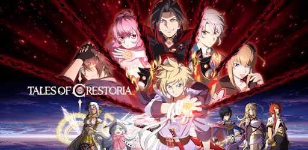
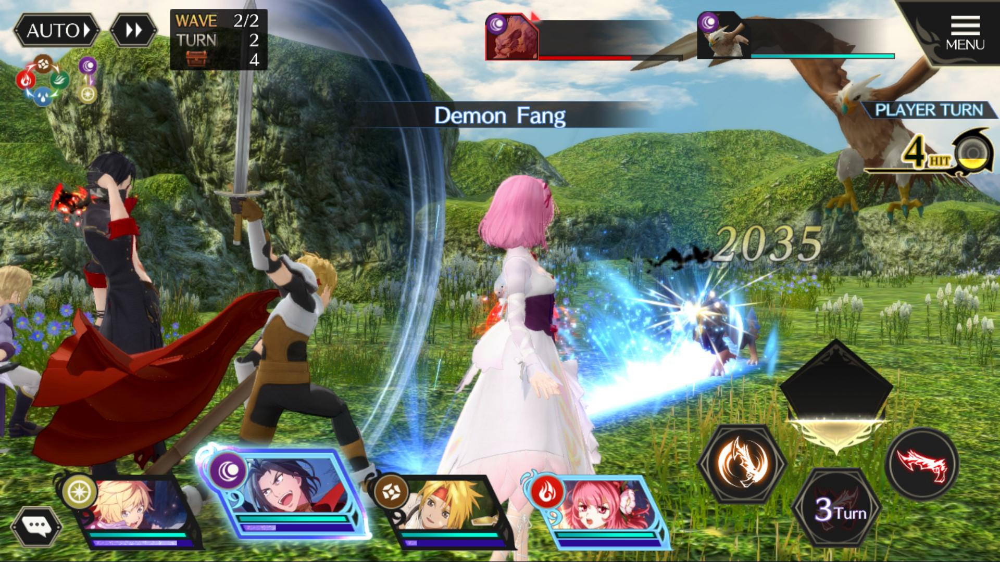
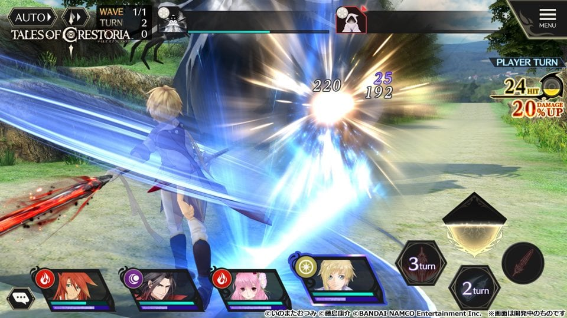
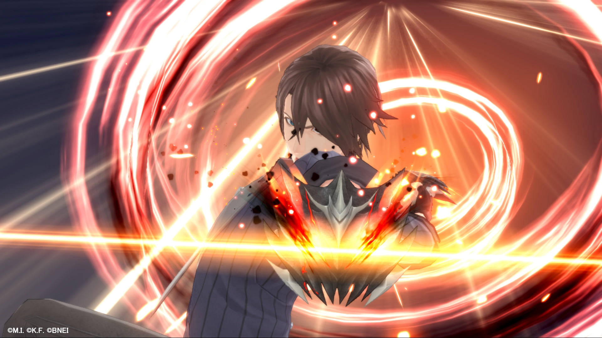

Tentang Tales of Crestoria

Tales of Crestoria (テイルズ オブ クレストリア
Teiruzu obu Kuresutoria), juga dikenal dengan singkatannya
TOC/Teikure (テイクレ), adalah sebuah aplikasi permainan
untuk Smartphone yang dikembangkan oleh Bandai Namco Studio
dan KLab dan didistribusikan oleh Bandai Namco Entertainment.
Layanan game ini dibuka pada 16 Juli 2020.
Game ini dapat diunduh secara gratis, namun terdapat
pembelian dalam aplikasi (transaksi item).
Permainan ini merupakan bagian dari seri Tales of untuk perangkat
seluler. Subjudulnya adalah "RPG untuk Menemukan (Sahabat) Ternista
yang Tercinta" (愛しき咎我人（なかま）と出会うRPG
Itoshiki Togabito (Nakama) to deau RPG) dalam versi Jepang
dan "RPG yang Ditulis dalam Darah dan Pengkhianatan" (An RPG Written in Blood and Betrayal) dalam versi global.
Jalan Cerita
Ini adalah dunia di mana "vision orb" wajib dimiliki oleh
setiap umat manusia. Kanata, putra tunggal seorang pendeta pemimpin
desa yang terhormat, mulai memiliki rasa kepada seorang gadis
bernama Misella yang besar di panti asuhan ayahnya.
Namun, pada suatu malam yang ditakdirkan, Misella mengalami tragedi.
Demi menyelamatkannya, Kanata melakukan sebuah dosa yang serius.
Misella pun ikut berdosa karena melindungi Kanata. Akibatnya, dengan
menggunakan vision orb orang-orang memanjatkan doa agar
mereka dapat dihukum. Dengan terukirnya Tera Dosa di badan, mereka
menjadi "Orang Ternista" (咎我人 Togabito) dalam versi
Jepang, atau
Transgressors
dalam versi global, yang akan selalu diburu oleh para penindak
(執行者 shikkō-sha) dalam versi Jepang, atau
enforcers dalam versi global.
Di tengah keputusasaan, mereka berdua bertemu dengan seseorang yang
menjadi lambang kekejian dan ketakutan dunia yang dijuluki dengan
sebutan "Setan Ternista" (咎我鬼 Togaoni) bernama Vicious
dan menawarkan pilihan "mau kerap dimabukkan dosa, atau kalian akan
melahap dosa" (罪に飲まれるか、罪を喰らうか
Tsumi ni noma reru ka, tsumi o kurau ka) dalam versi
Jepang, atau "Kuasai dosa kalian, atau dia akan menguasai kalian"
(Own your sin, or let it own you) dalam versi global.
Menanggapi pilihan ini, mereka berdua memutuskan untuk tetap
menghadapi dosa tersebut dan mewujudkan "Blood Sin." Mereka
kemudian bepergian bersama untuk mencari tempat di mana mereka dapat
memperoleh ketenangan.
Gameplay
Kesan pertama yang mungkin membuat penggemar heran ketika melihat
Tales of Crestoria adalah sistem pertarungannya yang tidak
mirip seri Tales of biasanya. Di sini, kita bermain dengan
menggunakan sistem turn-based. Kelihatannya lebih mirip
dengan seri Final Fantasy daripada seri Tales of,
dan kamu mungkin penasaran apakah hasilnya tetap seru atau malah
membosankan.

meskipun wujudnya turn-based,
Tales of Crestoria tetap terasa cukup banyak aksi sebab
pertarungannya berjalan dengan cepat sekali. Beda dari
Final Fantasy klasik di mana kamu harus memilih-milih menu
untuk menyerang musuh, game ini langsung menyediakan tombol-tombol
yang mewakili serangan atau skill yang dimiliki tiap karakter. Kamu
cukup menekan tombol itu untuk memilih aksi di tiap giliran.
Sistem seperti ini terasa lebih mirip dengan seri
Valkyrie Profile, menghasilkan pertarungan yang cepat dan
menyenangkan. Tapi karena jumlah tombol terbatas, tipe
skill yang dimiliki tiap karakter pun akan terbatas pula.
Variasi serta kelangkaan karakter menentukan skill apa yang
mereka miliki, dan hanya karakter tingkat SSR saja yang memiliki
jurus pamungkas alias Mystic Arte.

Pertarungan turn-based biasanya mengandung sejumlah aspek
strategi. Di Tales of Crestoria, strategi ini hadir dalam
dua wujud, yaitu elemen karakter dan urutan serangan. Tiap karakter
memiliki elemen internal sendiri-sendiri, misalnya Sorey yang
berelemen angin atau Kanata yang berelemen cahaya. Bila karakter
menyerang musuh yang lemah terhadap elemennya, serangan itu akan
mendapat bonus damage, begitu pun sebaliknya.

Lucunya, elemen ini terikat pada setiap karakter, bukan pada jenis
serangan. Jadi misalkan Sorey punya jurus-jurus yang terlihat
mengeluarkan api, jurus itu tetap dianggap elemen angin karena
elemen internal karakter ini adalah angin. Urutan serangan karakter
juga berperan cukup penting, sebab semakin banyak kamu melakukan
serangan, akan ada penambahan multiplier yang menjadikan
damage
semakin besar.